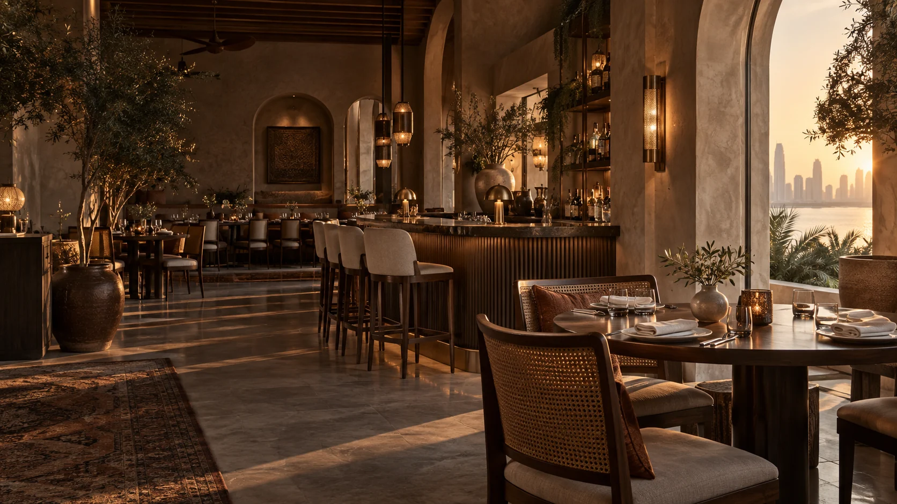
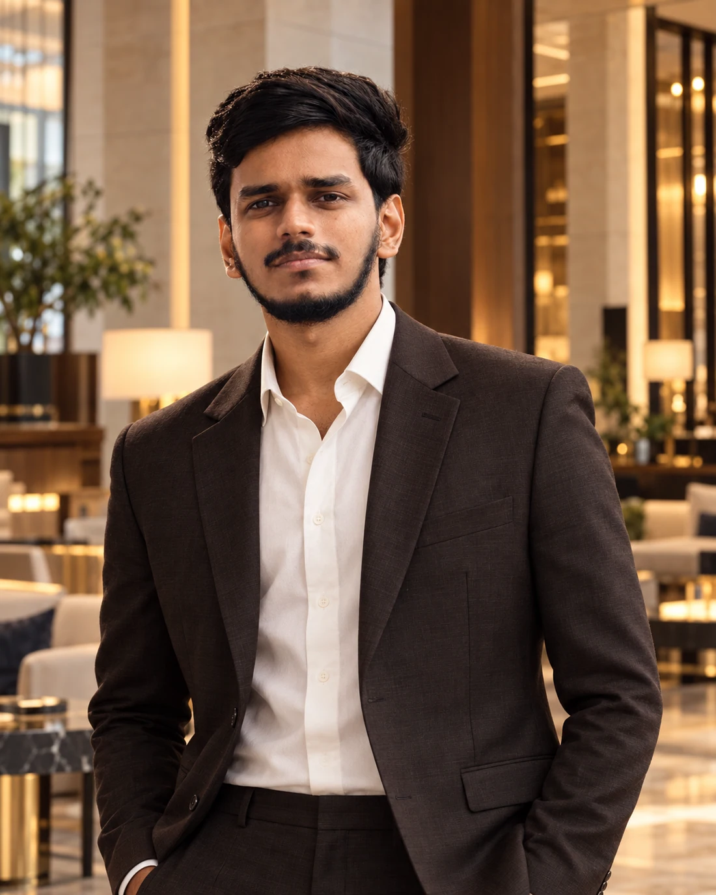
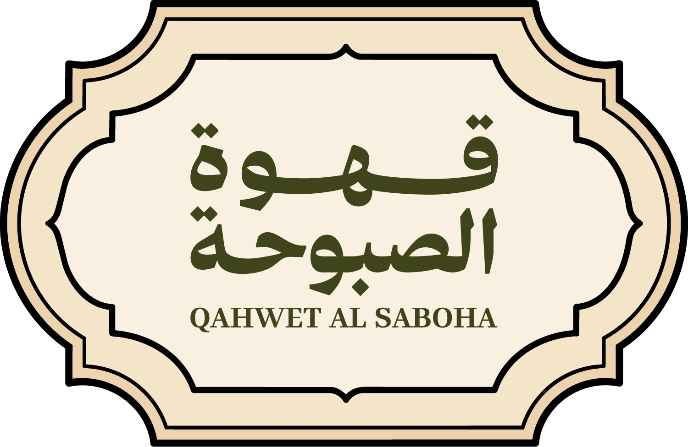
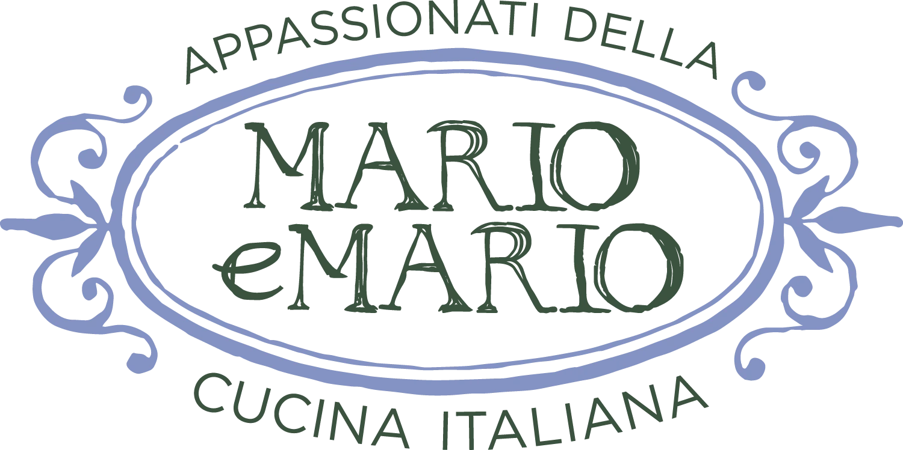
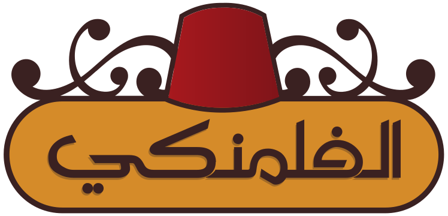

01
Brand & campaign
Visual identities, launch concepts, social campaigns and brand guidelines built to hold together across channels.

· Hospitality & F&B · Doha, Qatar
I’m Mohamed Aashiq, a multidisciplinary designer and content creator building memorable hospitality brands across campaigns, menus, packaging, motion and film.
Creative direction & design · Mohamed Aashiq

Meet the designer / content creator
The menu, the campaign and the way a dish moves on screen all set an expectation.
I bring more than five years of in-house, agency and freelance experience to hospitality and lifestyle brands. Today, I work as a Graphic Designer at Al Sharqi Holdings in Lusail and serve as the sole in-house designer across more than ten group brands, including Infinity Hospitality.
My work combines brand thinking with hands-on delivery: Arabic and English artwork, image retouching, print production, motion, video and 3D. The goal is always the same: make the brand feel consistent wherever a guest meets it.
What I bring to the table
One creative partner across the guest journey, from a launch idea and visual identity to the everyday assets that keep the experience consistent.
Visual identities, launch concepts, social campaigns and brand guidelines built to hold together across channels.
Menu books, in-venue collateral, signage, packaging and print-ready artwork with a strong eye for production detail.
Content strategy, social campaigns, promotional reels, motion systems, video editing and colour work that bring the atmosphere to screen.
Retouching, product mock-ups, photography, 3D and AI-assisted concept visuals for faster, clearer creative decisions.
Selected hospitality work
Five focused projects spanning hotel branding, café campaigns, restaurant motion, food packaging and atmospheric video.
01 · Hotel branding
A refined identity, from monogram to guest experience.
A complete hotel branding concept built around an elegant A monogram, a flowing wave motif and a warm burgundy, ivory and bronze palette.
My roleBrand strategy, logo design, visual identity, colour system and applications. The governing decision was restraint: one motif, one palette, and no element permitted to repeat for decoration.
12 · Content creation campaign
A complete social content system for Astera Hotel, designed to turn the brand identity into a steady stream of useful, recognisable guest communication.
My content creator roleCampaign strategy, content pillars, creative direction, visual development, copywriting, design, motion direction and editing across posts, stories and reels.
Campaign reasoning
The campaign balances aspiration with practical guest value. Every asset belongs to a content pillar, while the same typography, warm grade, burgundy accents and restrained wave motif keep the system immediately recognisable.
Rooms, arrival and weekday escapes sell the feeling of a considered stay before they sell a rate.
Breakfast, coffee and dining moments use close detail and appetite appeal to make the hotel feel lived in.
Gym and pool content creates a slower counterpoint, presenting wellbeing as part of the stay rather than an add-on.
Welcome and housekeeping content makes care visible, giving the campaign a human layer beyond architecture.
Nine portrait posts move between brand promise, guest experience, amenities and conversion-led offers. The sequence varies pace without changing the visual language.
Five story designs translate the campaign into immediate reasons to visit. Each format keeps the call to action visible while giving the food, drink or activity enough room to sell itself.
Four vertical pieces complete the campaign with one motion language. The same pacing, type entrance and closing hold make leisure, dining and wellness sound like one hotel.
02 · Social campaign

A Lebanese story, from first light to Doha.
A six-post Instagram campaign for a Lebanese café in Doha, moving from a familiar morning ritual into music, postage and the journey from Beirut.
My roleCampaign concept, art direction, composition and Arabic typesetting. Built as one continuous feed arc rather than six isolated posts, so the account rewards scrolling backwards.
Six connected posts designed as one continuous feed story, from opening the shutters to announcing a new flavour in Doha.
03 · Motion design

One restaurant identity. Two moving promotions.
The restaurant’s existing stripes, crest and food imagery become a vertical content system with movement, pace and appetite appeal.
My roleMotion direction, composition, animation and timing. The brand’s existing stripes and crest were treated as fixed. Nothing was redrawn, only set in motion.
Videos play muted. Use the sound button to listen.
04 · Packaging design
A flexible meal-plan system, from sleeve to carry bag.
A coordinated packaging family for prepared meals. White, deep green and sage distinguish the plans while a consistent hierarchy makes every pack easy to navigate.
My rolePackaging system, layouts, colour variants and applications. Three plans needed to be distinguishable at arm’s length in a fridge, so colour carries the hierarchy and type stays constant.
The full order
The starburst pattern moves from sleeve to wrapping paper and bag, while the type system keeps every plan recognisable.
05 · Reel editing

Food, service and atmosphere in a vertical reel.
A vertical restaurant reel built for social media, letting the small details register: pours, plates, warm interiors and the gestures of service.
My roleReel editing, pacing and colour correction. Graded warm to preserve the room’s atmosphere while keeping food and service details natural.
Experience
Mar 2026 - Present
Sole in-house designer across 10+ group brands, delivering campaigns, profiles, signage, social content and brand systems.
Sep 2023 - Feb 2026
Hospitality, restaurant and lifestyle work for US and Canadian clients, including menus, print, web, email and social content.
Feb 2022 - May 2023
Resort photography, restaurant menus, in-outlet collateral, campaigns and motion for hospitality and lifestyle brands.
2019 - Present
Branding, marketing collateral, social content, photography and video for international clients.
A table for the next idea
Based in Doha with a valid QID, NOC available and 30 days’ notice. Open to hospitality roles, freelance projects and creative collaborations.